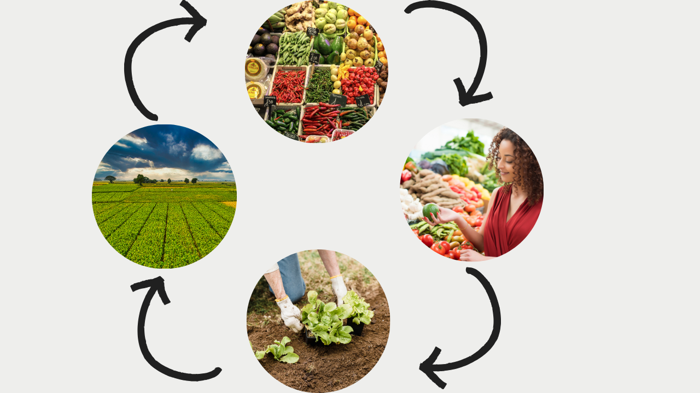
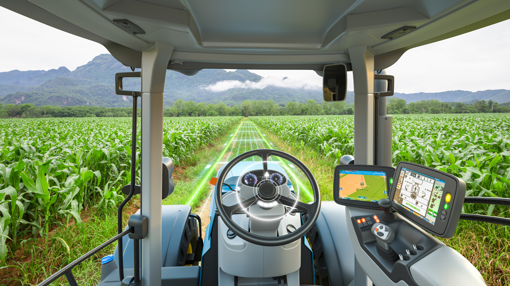

Laços de Terra e Asfalto: Festejando Nossa Conexão
A conexão entre campo e cidade é a base da nossa sociedade.
O campo, com suas lavouras e criações, produz o alimento que chega à nossa mesa, as matérias-primas para a indústria e a energia que move o país.
cidade, por sua vez, oferece o mercado consumidor, a tecnologia, a educação e os serviços que impulsionam o desenvolvimento rural.
Essa interdependência é um ciclo virtuoso: o campo alimenta a cidade, e a cidade provê o suporte para que o campo prospere.
É uma parceria fundamental que merece ser valorizada e festejada diariamente, garantindo o bem-estar de todos.

Colheitadeiras altomaticas

Tratores altomaticos, hoje em dia maquinas estão pilotando sozinhas, humanos controlando
tudo por telas, apenas apertando um botão tudo se faz altomatica,
Tratores autônomos são máquinas agrícolas que foram desenvolvidas
(através de um modelo denteligência Artificial) para trabalhar sem a necessidade de operador,
com o objetivo de maximizar os ganhos e gerar uma eficiência maior nos trabalhos da lavoura.
Estufa altomatica
Descubra os benefícios da automação de estufas agrícolas,
como aumento da produtividade e qualidade dos produtos.
Conheça os métodos de automatização e os custos envolvidos.
A automação de estufas agrícolas é um processo que tem se tornado cada
vez maispopular devido aos seus benefícios para os produtores agrícolas e pesquisadores.
Drones no campo, o uso deles tem sido fundamental em grandes partes, aumentando a velocidade
e as areas que são atingidas:
.png)
.png)